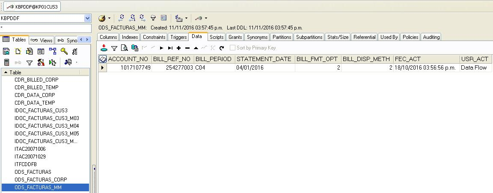

Menu Mainframe➔
Menu Adminfact➔
Menu Extracciones➔
Menu Mainframe➔
Menu Adminfact➔
Menu Extracciones➔
Pasos para la extracción Medios Magneticos
1.-Está extracción, solo se realizará cuando lo solicite el analista de pruebas y que sea Corporativa
2.- Realizar los pasos que se describen en la Extracción Corporativa, el cambio importante es a la hora de procesar en el servidor srvft15 el proceso crea_saldo_convenio.sh, cuando pida la fecha se le colocará la última fecha que tenga la cuenta, ver ejemplo para la cuenta 1013121507
Cuando solicite Introduzca fecha de ciclo formato YYYYMMDD se colocará 20160522, y cuando pida Introduzca ciclo o consecutivo siguiente # se solocará para este caso el número 22 que le corresponde al día
3.- En el TOAD entrar al CUS1 o CUS3 según sea el caso, entrar en la tabla ODS_FACTURAS_MM, en la pestaña data llenar
los siguientes campos:

4.- Finalizada la cadena de Extracción Corporativa, se procesará ONDEMAND, ver punto No. 9 de los pasos para la Extracción Corporativa, luego, procedemos a ordenar en Control-m/Enterprice la cadena de Medios Magneticos, la fecha que usaremos ha de ser la misma que la Extracción Corporativa, ver ejemplo:

4.-Al finalizar la cadena de Extracción Medios MAgneticos generará un archivo en Mainframe:
HFTMM.SJBP2000.MEDMAGNE.EXT0XXXX.G0031V00
FIN DEL PROCESO